Cursuri de prim ajutor în Iași și la sediul firmei
Majoritatea oamenilor intră în panică și pierd secundele care contează. La MEDTACT exersați pe manechine, nu pe slide-uri, până când reflexul rămâne în corp, nu în notițe.
Ce faceți când un adult se prăbușește și nu răspunde. Apăsați pe fiecare pas: exact această ordine o exersăm la curs, pe manechin.
Trafic, curent electric, foc, gaz. Nu deveniți a doua victimă. Abia apoi vă apropiați.
Scuturați ușor de umeri și întrebați tare: Mă auziți? Dacă nu răspunde și nu respiră normal, tratați situația ca stop cardiac.
Sunați cât mai repede. Cât timp așteptați răspunsul, verificați respirația. Dispecerul vă poate ghida dacă nu sunteți sigur.
În centrul pieptului, 100–120 pe minut, 5–6 cm adâncime, cu întreruperi cât mai scurte. Folosiți metronomul de mai sus ca să prindeți ritmul.
Oricine poate folosi un defibrilator automat. Porniți aparatul și urmați instrucțiunile vocale. Continuați compresiile până preia echipajul.
Pentru adult, după ghidurile ERC 2025 de suport vital de bază. Nu înlocuiește cursul practic.
Predăm aceleași reflexe la doi oameni foarte diferiți: cel care vrea să știe ce să facă acasă și firma care trebuie să-și pregătească angajații desemnați pentru prim ajutor.
Părinți, bunici, șoferi, oricine ține la cineva. Un curs de câteva ore care vă dă un plan clar pentru primele 60 de secunde ale unei urgențe: resuscitare, folosirea defibrilatorului, dezobstrucția căilor respiratorii.
Vezi cursurileInstructaj de prim ajutor pentru lucrătorii desemnați (art. 10, Legea 319/2006), la sediul firmei, pentru echipe de orice mărime, de la birou la echipaje operative.
Vezi oferta pentru firmeOricine poate folosi un defibrilator automat. La curs îl aplicați pe manechin, cu aparatul de antrenament, până nu mai ezitați.
Certificat individual cu serie unică și fișă de prezență, pregătite pentru dosarul de securitate și sănătate în muncă.
Fiecare cursant exersează, pe rând, fiecare gest.
Dan Țugui este și trainer pentru cel mai mare producător european de ambulanțe și autospeciale de intervenție. Ce se predă la curs vine din experiență cu echipamentul real, nu din manual.
Manechine, defibrilator de antrenament, scenarii cronometrate. Cursantul repetă gestul cu mâinile lui, nu doar îl vede pe un ecran.

Fiecare absolvent primește un certificat cu serie unică, verificabil online, conform ghidurilor ERC 2025.
Predăm după ediția 2025 a ghidurilor Consiliului European de Resuscitare: ritm, adâncime, raport compresii-ventilații și folosirea defibrilatorului.
Firme, echipaje de intervenție, cursanți fără pregătire medicală. Fotografii de la cursurile ținute de Dan Țugui.
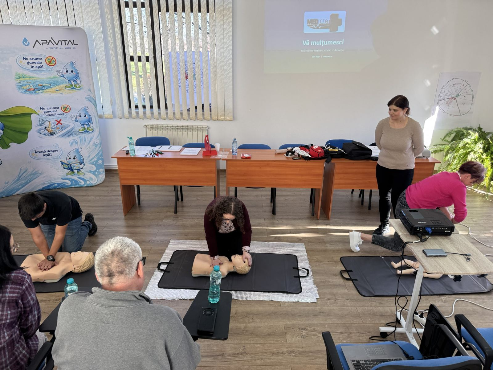
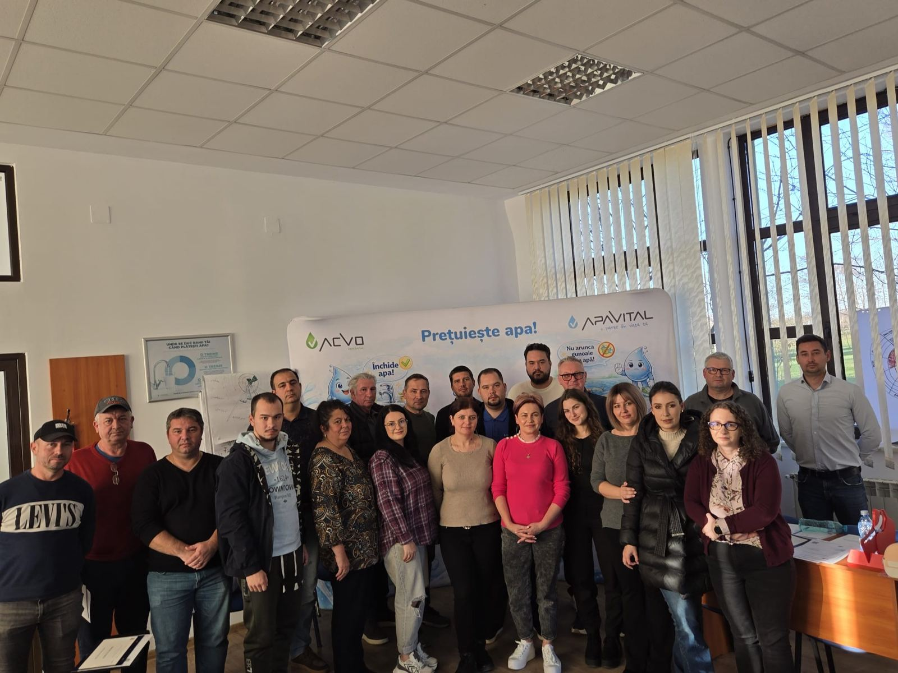
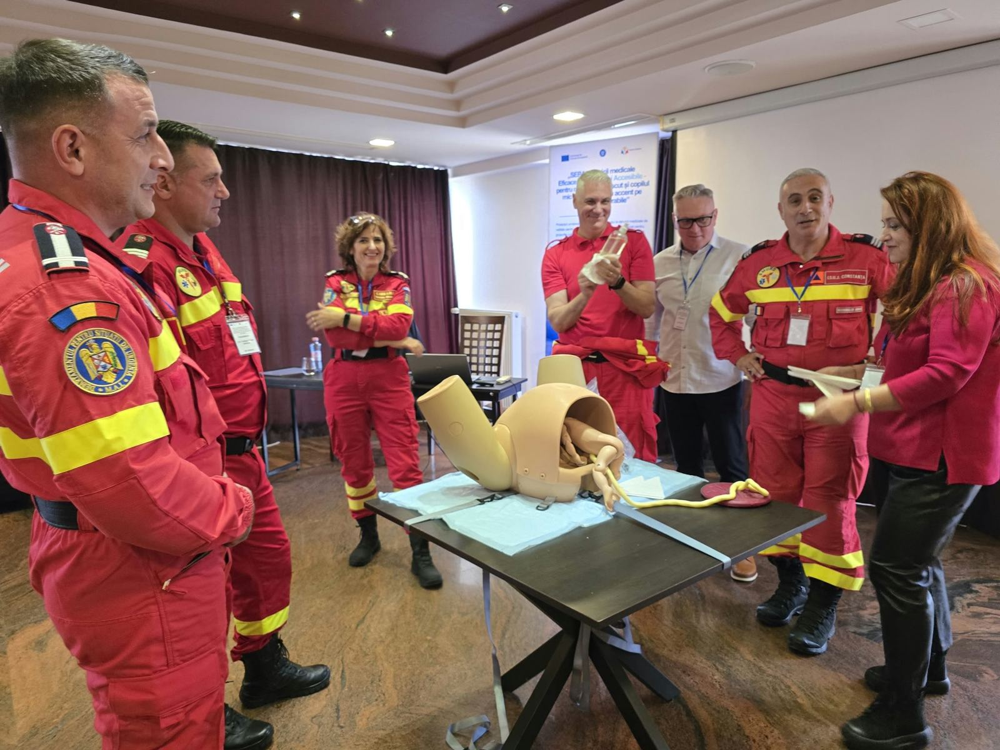
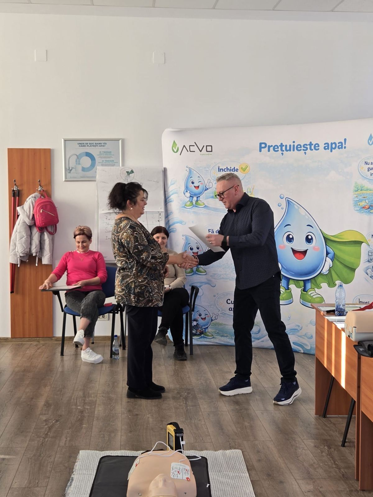
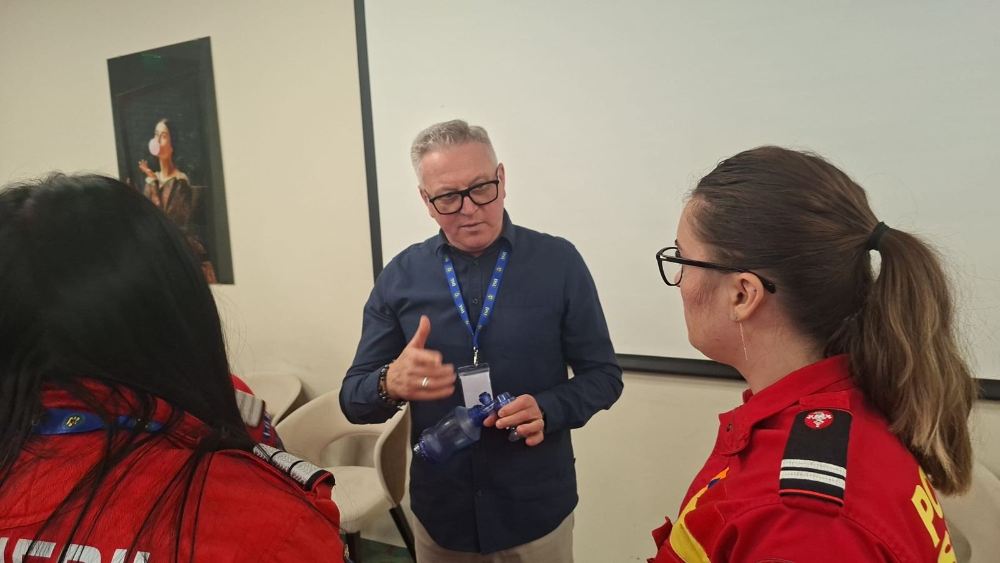
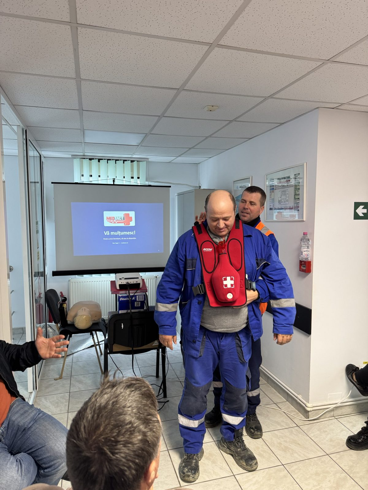
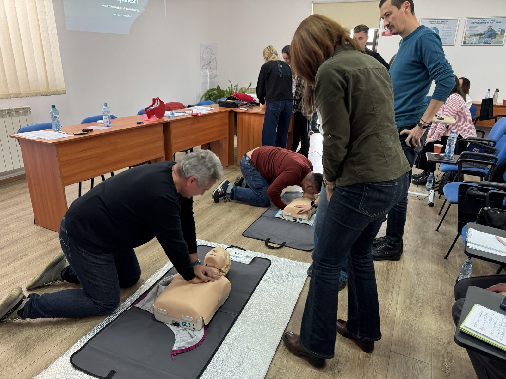
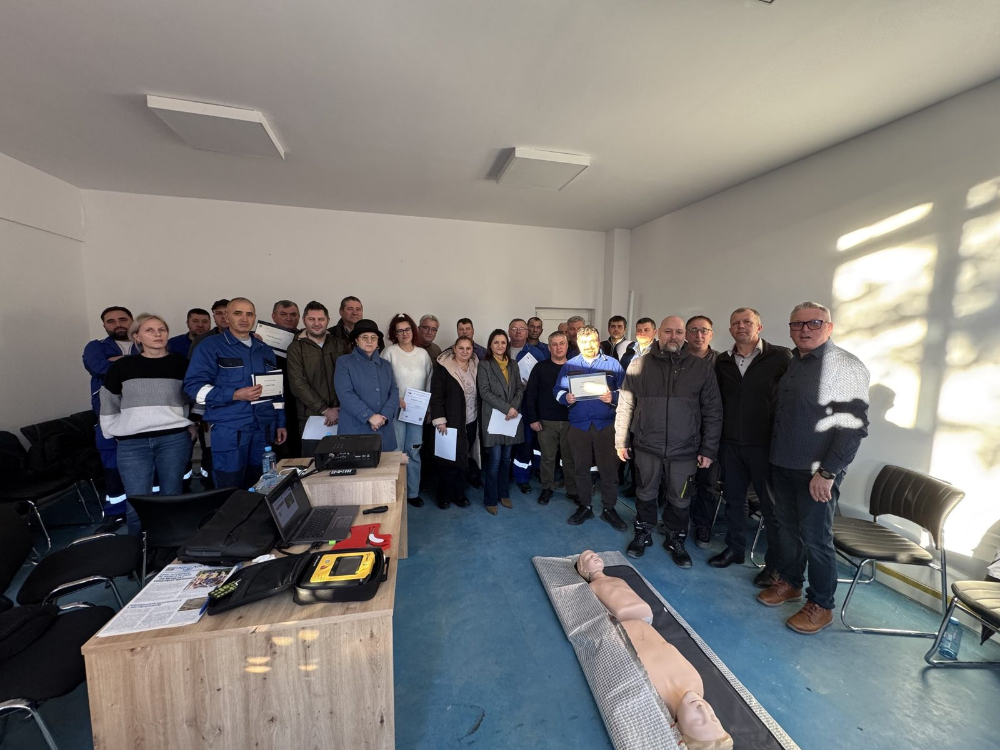
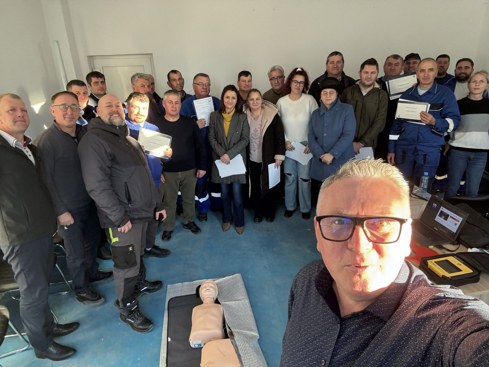
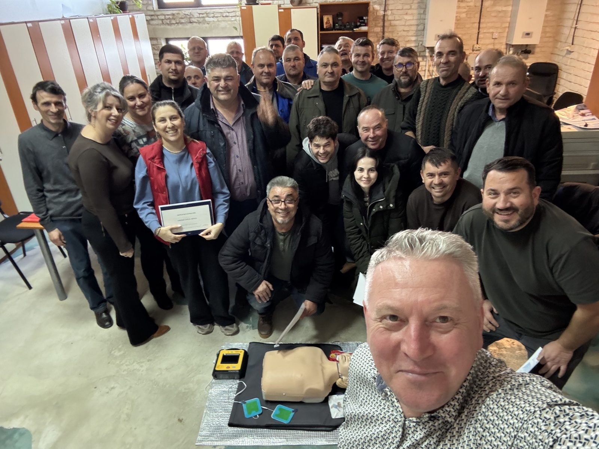
Absolvenții primesc certificat cu serie unică (ex: MT-BLS-2026-001), verificabil online. Util pentru dosarul de securitate și sănătate în muncă al firmei, nu doar o hârtie de perete.
Cere ofertă pentru firmă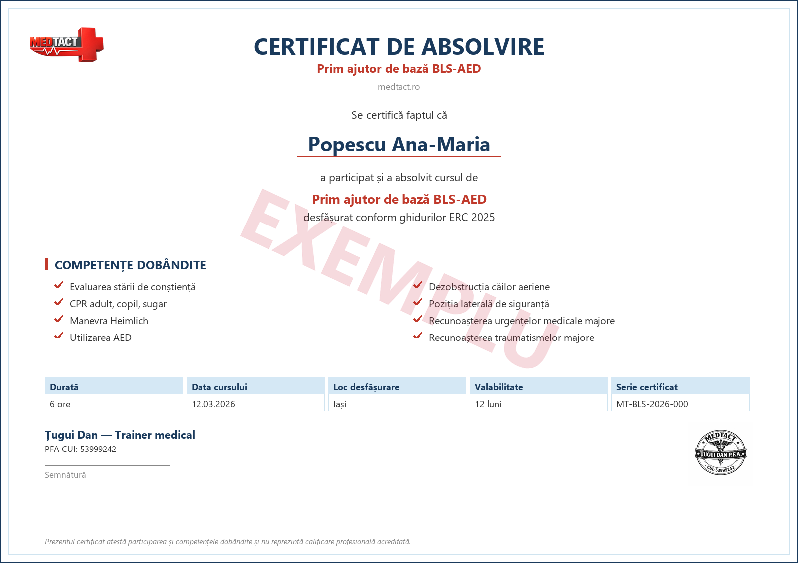
Fiecare certificat are o serie unică. Introduceți seria și vedeți imediat dacă documentul este valabil.